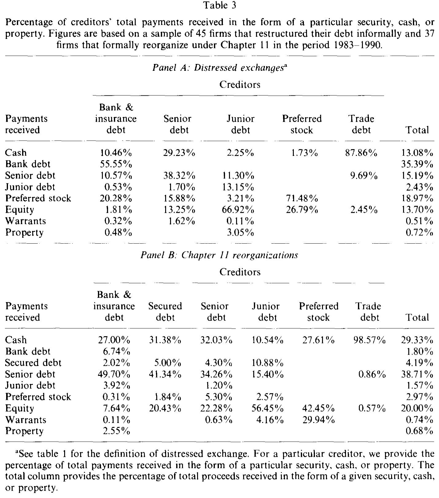
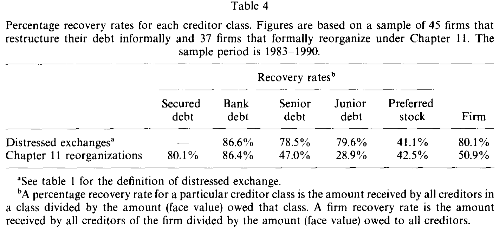
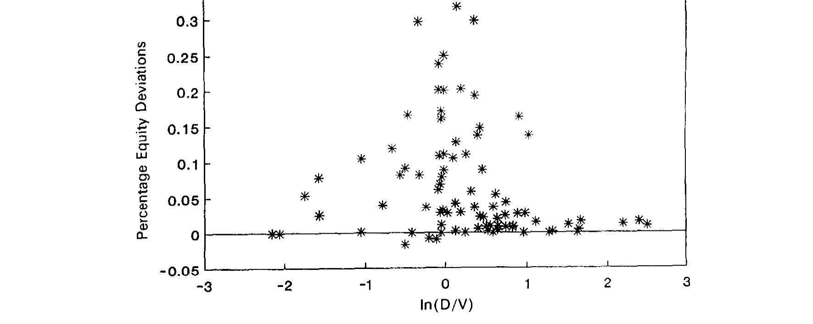
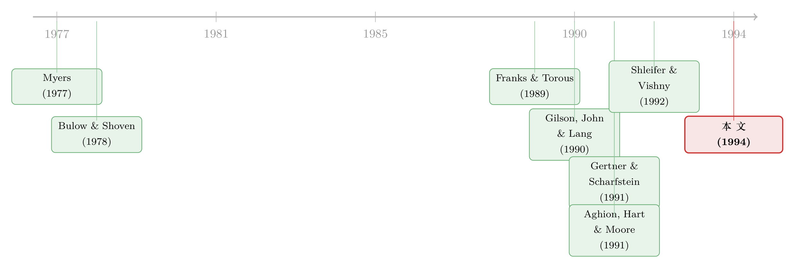

破产之外的那条暗路：为什么「庭外和解」反而肯多给股东一笔钱
本文读的是 Franks & Torous (1994, JFE)：作者把 82 家陷入财务困境的美国公司分成两组——45 家走「庭外的困境交换」、37 家走「正式的第十一章重组」——逐一对账后发现，庭外和解里债权人的回收率更高（中位数 80.1% vs 50.9%），而股权得到的「绝对优先权偏离」也更大（9.5% vs 2.3%）。这两个数字的差额，被作者解读成债权人「为了躲开正式破产而愿意割让的代价」，也就是正式破产成本的一个下界估计。
1 一个把直觉拧反的悬念
先讲一个几乎写进所有公司金融教科书的「常识」。
一家公司还不起债，按照债务契约里的 绝对优先权 (absolute priority rule, APR)，清偿的次序是铁律：先还有担保的，再还高级债、次级债、优先股，最后才轮到普通股股东。如果债权人连本金都收不回，股东理应一无所有。可现实里我们一次次看到，破产重组结束时，分明没还清债的公司，股东手里却还攥着新公司一小块股权——这就是所谓的「对绝对优先权的偏离」(deviation from absolute priority)。
于是，长久以来人们形成了一个印象：正是「第十一章」(Chapter 11) 这种正式破产程序，惯出了对绝对优先权的偏离。因为破产法把重组的主导权——所谓「债务人占有」(debtor-in-possession) 的独占提案权——交到了原管理层和股东手里，他们就能借这个程序，从债权人嘴里抠下一块本不属于自己的肉。Jensen (1989) 说得直白：正式重组的成本高到足以解释为什么大家更爱私了，而 APR 偏离不过是这套程序「纵容」出来的、对债务契约的违背。
这个故事听上去顺理成章。可 Franks 和 Torous 把数据摊开一看，却发现了一处刺眼的矛盾。
他们手上有两组陷入同样困境的公司：一组绕开了法庭，靠 困境交换 (distressed exchange)——把旧的公开债券换成新证券——私下了结；另一组走进了法院，做完了正式的第十一章重组。如果「偏离来自破产程序」的故事是对的，那么 APR 偏离理应在第十一章里更大。
但事实恰恰相反。 在庭外的困境交换里，流向股东的偏离平均达到重组后公司价值的 9.5%；而在第十一章里，这个数字只有 2.3%。
换句话说，最肯给股东「法外开恩」的，不是那个被诟病的破产法庭，而是那场没有法官在场的私下谈判。 这是怎么回事？谁在给股东送钱，又为什么送？这篇 1994 年的论文，就是顺着这个反直觉的缺口一路挖下去的。
2 数据：把两条路上的公司摆到同一张台子上
要回答这个问题，第一步是得有一批「可比」的公司——它们陷入了相似的困境，只是最后选了不同的出口。
作者从 标准普尔信用观察 (Standard & Poor's Credit Watch) 出发，锁定 1983–1988 年间被下调到 CCC 或更差（含 D 违约、NR 取消评级）的公开债发行人。CCC 在标普口中意味着「易于违约」，D 是已经发生支付违约，NR 则是评级被撤。再用《华尔街日报索引》逐家核对，区分出谁去做了困境交换、谁进了第十一章。一番筛选之后，最终样本是 45 家困境交换 + 37 家第十一章重组，外加从 Bankruptcy DataSource 补充的若干 1988 年后才完成的破产案。
这里有个值得记住的样本特征：每家公司都得有公开交易的债券才会被纳入。这一点把它和当时的标杆研究 Gilson, John & Lang (1990, 下称 GJL) 区分开了——GJL 只要求公司在纽交所或美交所上市，结果他们样本里 54% 的公司压根没有公开债。所以本文偏向更大、更依赖公开市场融资的公司。后面很多与 GJL 的分歧，根子都在这里。
把两组公司放到同一张财务体检表上，第一个清晰的对比就浮现了：走庭外路线的公司，本来就「病得轻一些」。 它们在违约前一个会计年末更有偿付能力、也更有流动性（市场杠杆率、流动比率的差异在 <0.01 的水平上显著）；违约前两年的股价累计跌幅，中位数是 -59%，而第十一章公司是 -76%（Mann-Whitney 检验 p = 0.026）。它们也走得更快：庭外和解从违约到完成中位数只要 17 个月，第十一章则要 27 个月。
接着，一个自然的问题是：这两组真的是「天生」不同，还是同一批公司在不同阶段的两副面孔？作者翻出一个关键细节——37 个第十一章案例里，有 19 个是在公开宣布过、却最终放弃了庭外重组之后才走进法院的，从宣布尝试到正式入庭的中位时间是 6 个月。也就是说，第十一章常常不是「第一选择」，而是「私了失败后的退路」。这个事实，是后面所有故事的伏笔。
3 识别：这不是一场实验，而是一次诚实的对账
在往下走之前，得把这篇论文的「身份」说清楚，否则容易把它读成它不是的东西。
这不是一篇用 双重差分 (difference-in-differences, DiD) 或 工具变量 (instrumental variable, IV) 做因果识别的论文。公司选择庭外还是庭内，是它们自己「选」出来的——病轻的、债权人少的、协调成本低的，更可能私了成功；病重的、谈不拢的，被推进法院。这是一个典型的 自选择 (self-selection) 问题，作者本人也毫不掩饰。
所以本文的方法论身份更接近一次结构化的描述性对账 (descriptive comparison)：把清偿的媒介、各档债权的回收率、以及对绝对优先权的偏离，在两组之间逐项算清、做中位数检验。它的说服力不来自「随机分配」，而来自测量的细致——作者一笔一笔地去算每一类债权人到底拿回了什么。
这意味着，文中那些差额（比如回收率高出近 30 个百分点）不能简单读成「选第十一章会让你少回收 30%」的因果效应——它混入了「选第十一章的公司本来就更资不抵债」这一层。作者的高明之处，在于他没有假装这是因果，而是把这层选择变成了论证的一部分：正因为债权人会主动把更病重的公司「放行」进法院、把病轻的留在庭外谈，回收率与偏离的模式才恰好印证了那个「延迟期权」的故事。这一点，我们留到第 6 节。
4 第一条线索：现金都流去了哪里
要拆解这个谜，先看一个看似枝节、却极有信息量的维度——清偿用的是什么「媒介」。债权人最后拿回的，可能是现金，可能是新发的高级/次级债、优先股、普通股，甚至是实物资产。
如表 3 所示，作者把每一类债权人收到的清偿物按构成拆开。规律很干净：越高级的债权人，越多地拿到现金和高级证券；越低级的，越多地被塞进股权。庭外交换里，高级债拿回的多是现金（29%）和新高级债（38%）；次级债则主要被换成普通股（67%）。第十一章里的格局类似。

Table 3
但真正跳出来的对比是现金的总用量：第十一章里，整体清偿中有 29% 是用现金兑付的；庭外交换里只有 13%。
这就奇怪了——前面刚说过，进第十一章的公司更缺乏偿付能力、流动性也更差，它们手头的现金本该更紧，怎么反倒能拿出更多现金去还债？
答案藏在破产法本身。第十一章给了公司三件别处没有的「现金工具」：其一，对未足额担保和无担保债权的利息可以暂停支付（section 362(a) 的自动冻结），从而保住现金；其二，可以通过 债务人占有融资 (debtor-in-possession financing, section 364) 借到新钱；其三，可以更容易地出售资产（section 363）。与第三条相印证，第十一章公司在重组期内的资产出售（占重组后公司价值）中位数高达 44%，庭外交换只有 28%（p = 0.10）；而且现金使用与资产出售的相关性，在第十一章里（0.582）也明显高于庭外（0.306）。
换句话说，第十一章不是让公司「变有钱」，而是给了它一套把别处的资源（暂停的利息、新借的钱、变卖的家当）转换成现金去清偿的法律机器。关于困境中「该不该、该多快卖资产」这条线，可参见《止赎来的那栋楼，银行为什么按着不卖？》与《给濒死的公司放贷，是助纣为虐，还是雪中送炭？》。
5 第二条线索：谁回收得更多
然后，把镜头拉到最直接的指标——回收率 (recovery rate)，即某类债权人拿回的金额占其债权面值的比例。
如表 4 所示，结论一目了然：庭外交换的公司,整体回收率显著更高。全公司层面的回收率，庭外交换中位数是 80.1%（约「八毛钱兑一块」），第十一章只有 50.9%（约「五毛一」），Mann-Whitney 检验 p < 0.01。

Table 4
逐档来看也很有意思：高级债的回收率，庭外（79.6%）远高于第十一章（47.0%）；次级债则两边都惨（41.1% vs 28.9%）。一个细节值得玩味——银行债在第十一章里的回收率（86.4%）反而比庭外（78.5%）略高，这与「银行在正式程序中更能护住自己」的直觉吻合。
有人可能担心：这些回收率有一部分是用债券面值而非市价算的（因为重组后公司新发的债往往没有市场报价），会不会高估？作者专门挑出那些所有清偿物都有市价的子样本（12 家庭外、10 家第十一章）重算一遍，结论不变，甚至更极端：庭外中位数 73.8%，第十一章只有 41.1%。
到这里，回收率的差异其实不难解释——进第十一章的公司本来就更资不抵债（第 2 节的选择），加上 GJL 强调的更高的直接成本，以及 Shleifer & Vishny (1992) 所说的「同行也濒危时被迫贱卖资产」的间接成本（关于资产「火线甩卖」如何压低价格，可参见《同一个发行人的两只债券，戳破了「火线甩卖」的幻觉》）。
但这只是铺垫。真正反转的一步，是把回收率和绝对优先权的偏离放在一起看。
6 反转：股东手里那张「延迟期权」
现在回到开头的悬念。庭外交换里，股东拿到的偏离（9.5%）远大于第十一章（2.3%）。如果偏离不是破产程序「惯」出来的，那它从哪来？
作者的解释，是把它从「程序的副产品」翻转成「谈判的筹码」。
关键在于：困境交换在法律上要付出代价才能成功。根据 1939 年的《信托契约法》(Trust Indenture Act)，针对违约债权的交换要约通常需要全体相关债权人一致同意。只要有人「钉子户」(holdout) 死扛要更好的条件，交换就可能流产。而让交换不流产、避免大家一起掉进更贵的第十一章，对债权人是有价值的。
于是债权人愿意做一件看似反常的事：主动多分给股东一块，换股东点头完成庭外交换。 因为只有股东（和管理层）握着一个东西——威胁进入第十一章的能力。债务人占有方等于持有一个「延迟期权」(option to delay)：通过扬言入庭、拖延对债权人的偿付，逼债权人在庭外让步。
这就解释了开头的全部反直觉：
- 为什么庭外偏离更大？因为那是债权人花钱买来的「不去法院」。
- 为什么差额有意义？9.5% − 2.3% = 7.2% 个百分点，正是债权人为了躲开第十一章而愿意割让的价值——它构成了正式破产「更高成本」的一个下界估计 (lower bound)。这一步，把一个一直停留在理论争论里的量（破产到底多贵），第一次用市场上真金白银的让渡给「标」了出来。
- 为什么在庭外只有股东得益，而在第十一章里连次级债、优先股也能分一杯羹？因为庭外谈判的对象集中、要约结构简单，债权人只需「收买」股东这一个关键否决者；而第十一章的程序里，更多档的求偿人都有了讨价还价的位置。
如图 1 所示，作者进一步把股权偏离与这个「延迟期权」的价内程度 (moneyness) 联系起来：当公司价值越接近债务面值、股东那个「等一等也许能翻身」的期权越在价内时，股东能谈下来的偏离就越大。偏离不是随机的恩赐，而是随期权价值系统地变化的——这正是「期权」解释最有力的证据。

Figure 1: Percentage equity deviations related to the moneyness of the equity holder’s option to delay
这套逻辑，与把 APR 偏离视为「契约违背」的 Jensen (1989) 针锋相对，却与 Gertner & Scharfstein (1991) 一脉相承：偏离不是程序的「漏洞」，而是重订合约（recontracting）过程中不可或缺的一环，它让公司得以保留那些本会因 债务积压 (debt overhang, Myers 1977) 而被放弃的有价值项目。关于债务如何成为谈判桌上的筹码，也可参见《债，其实一直在动：当「随机发债」补全了信用风险的另一半》与《strategic-debt-restructuring》。
7 文献脉络
把这篇论文放回它所在的那条河流里，会看得更清楚。
源头有两支。一支是财务困境成本的理论争论：Bulow & Shoven (1978) 很早就把破产决策模型化为债权人与债务人之间的博弈；到了 1989 年前后，Jensen (1989) 与 Aghion, Hart & Moore (1991) 把第十一章批得体无完肤，认为正式程序成本高昂、扭曲激励；而 Gertner & Scharfstein (1991) 则反过来为「偏离」正名，论证它在重订合约中的积极作用。另一支是实证的清算/重组成本测量：Weiss (1990) 记录了破产的直接成本与优先权违背，Eberhart, Moore & Roenfeldt (1990) 测量了破产程序中的 APR 偏离，作者自己的 Franks & Torous (1989) 则系统刻画了第十一章重组。

与本文几乎并肩的标杆，是 Gilson, John & Lang (1990)——他们第一次系统比较了私下重组与正式破产的选择。本文的位置，是在 GJL 的比较框架之上，往「谁拿回了什么」这个微观层面再钻一层：不仅问「走哪条路」，更逐档算清回收率与偏离，并用两组偏离的差额，给「破产到底多贵」这个老问题交出一个可量化的下界。Shleifer & Vishny (1992) 关于贱卖资产的洞见，则被用来解释回收率差异里的「间接成本」一环。
8 评论与延伸（Q&A + 研究方向）
(a) 几个可能的疑问
Q：庭外回收率高，会不会只是因为这些公司本来就病得轻，跟「程序好坏」毫无关系？
很大程度上是的，作者也承认这一点。回收率的差异主要由选择（病轻者私了、病重者入庭）和第十一章更高的直接/间接成本共同驱动，不能读成纯粹的程序因果。论文真正的「干净」之处不在回收率，而在偏离的差额——因为它衡量的是债权人在谈判桌上主动愿意割让的价值，逻辑上不那么依赖于两组的初始病情差异。
Q：那个 7.2%（9.5% − 2.3%）凭什么叫「正式破产成本的下界」？
因为它是债权人自愿多给股东、以换取不进第十一章的金额。债权人之所以肯掏这笔钱，说明在他们眼里第十一章的预期损失至少有这么大；既然这是他们「愿意付」的上限对应着成本的「至少」这么多，故而是下界。它捕捉的是被避免的成本，而非全部成本。
Q：为什么庭外交换需要「全体一致同意」，这跟偏离有什么关系？
《信托契约法》要求修改债券核心条款（如本金、利息）需相关债权人一致同意，这就给了每个小债权人「钉子户」式的否决权，也给了股东以「拖进破产」相要挟的空间。正是这种结构，逼着债权人用「多分给股东」来买通谈判，从而制造了更大的偏离。
Q：现金在第十一章里用得更多，不是说明破产其实「更有钱、更高效」吗？
恰恰相反。多出来的现金不是公司经营赚来的，而是破产法允许它暂停付息、举借 DIP 融资、变卖资产腾挪出来的。
44%的资产出售中位数本身就是一种代价——尤其当 Shleifer-Vishny 式的贱卖发生时，「拿到更多现金去还债」的另一面，是「家当被更便宜地处理掉了」。
Q：本文结论能推广到今天吗？样本毕竟是 1980 年代、还都是有公开债的大公司。
要谨慎。样本偏向大、依赖公开市场的公司，且不含预包装破产（prepackaged，作者专门剔除了 Crystal Oil 和 Resorts International）。如今预包装/预谈判破产、债券契约结构、债权人内部博弈都已大不相同（参见《an-empirical-analysis-of-prepackaged-bankruptcies》），「庭外更省」的幅度未必照旧。
Q：银行债在第十一章里回收率反而更高（86.4% vs 78.5%），怎么理解？
这与「银行在正式程序里更能护住自己的求偿、且更可能持有担保」的直觉一致。它也提醒我们：不同债权人在两条路径上的得失并不同向——笼统说「庭外对债权人更好」会掩盖类别间的再分配。
(b) 几个可能的研究问题与提案
1. 用现代公司债微观数据重估「延迟期权」的价值
【经济故事】本文的核心量——债权人为避免破产而割让的偏离——本质上是一个期权价值，且随价内程度变化（图 1）。如今有了 TRACE 逐笔成交、更细的债券契约数据，可以把这个期权用结构模型重新「定价」，看
7.2%这个下界在不同信用周期里如何漂移。 【可行性】中。数据可得（TRACE + Mergent FISD + 重组事件库），难点在于重组后新证券的估值与偏离的口径统一；识别仍受自选择困扰，但可借破产法改革、契约异质性做横截面比较。
2. 外资债权人会让「庭外和解」更难吗？
【经济故事】庭外交换成败的关键是协调成本与「钉子户」。如果债权人里有大量地域分散、信息劣势或法律救济不同的外资持有人，一致同意会更难达成，公司或被更多地推进正式破产。这把本文的协调逻辑接到了跨境持有人这条线上。 【可行性】中。需要债券层面的持有人国籍/类型数据（如 eMAXX、各国托管数据），并以困境事件为样本比较境内外持有比例对「庭外 vs 庭内」选择的影响。识别可用持有人结构的外生变动（如指数纳入、税收事件）。相关背景见《外资真是「蝗虫」吗？》。
3. 流动性枯竭时，「延迟期权」会更值钱还是更不值钱？
【经济故事】当二级市场流动性骤降、资产贱卖风险升高（Shleifer-Vishny 渠道增强），第十一章的预期成本上升，理论上债权人应更愿意在庭外让步，偏离应更大。可把宏观流动性状态作为调节变量，检验偏离的顺/逆周期性。 【可行性】高。把困境重组事件与市场流动性指标（如公司债流动性、VIX）对齐即可，事件足够多。可参考《差点死掉的那个市场：一场公司债流动性危机的微观解剖》的口径。
4. 「担保品再分配」与庭外/庭内选择
【经济故事】近年的「债权人互害」(creditor-on-creditor violence) 让担保品在重组中被重新洗牌。这会改变各档债权人的谈判位置，从而改变本文记录的「谁回收得多、谁拿到偏离」的格局。 【可行性】中。需要细致的契约与担保条款数据，识别担保结构变化对回收率分布的影响。背景见《把抵押品从老债主手里「抢」过来，反而是件好事？》。
我的判断
这篇论文最持久的贡献，不是「庭外比庭内省钱」这个结论本身（这一点 GJL 已经指出过），而是它把一个理论里争得面红耳赤、却始终没有价签的量——正式破产的成本——用市场上真实发生的让渡给量了出来。「用两组 APR 偏离之差作为破产成本下界」这个识别思路，干净、可复制，至今仍被引用。把偏离从「程序的漏洞」重新诠释为「延迟期权的行权价」，更是一次漂亮的视角翻转。
担忧也很清楚。其一是自选择：两组公司在进入处置前就系统不同，文中绝大多数横向比较（尤其是回收率）都背着这层内生性，作者诚实但无法根除。其二是样本与时代：82 家、1980 年代、清一色有公开债的大公司，且剔除了战略性破产与预包装案，外推到今天的信用市场需要打折。其三是偏离的测量：重组后新证券常无市价，用面值估值会引入噪声，尽管作者用市价子样本做了稳健性检验，子样本只有十来家。
我最想看到的后续，是把这套「延迟期权」框架接到今天的公司债微观数据和持有人结构上去——尤其是当债权人不再是少数本土银行、而是一群分散的、外资的、持仓动机各异的基金时，「庭外和解」这条暗路还走不走得通，那个 7.2% 的下界又会变成多少。
参考文献
- Aghion, P., Hart, O., & Moore, J. (1991). The economics of bankruptcy reform. Unpublished manuscript, London School of Economics.
- Bulow, J., & Shoven, J. (1978). The bankruptcy decision. Bell Journal of Economics 9, 436–445.
- Eberhart, A., Moore, W., & Roenfeldt, R. (1990). Security pricing and deviations from the absolute priority rule in bankruptcy proceedings. Journal of Finance 45, 1457–1469.
- Franks, J., & Torous, W. (1989). An empirical investigation of U.S. firms in Chapter 11 reorganization. Journal of Finance 44, 747–767.
- Franks, J. R., & Torous, W. N. (1994). A comparison of financial recontracting in distressed exchanges and Chapter 11 reorganizations. Journal of Financial Economics 35(3), 349–370.
- Gertner, R., & Scharfstein, D. (1991). A theory of workouts and the effects of reorganization law. Journal of Finance 46, 1189–1222.
- Gilson, S., John, K., & Lang, L. (1990). Troubled debt restructurings: An empirical study of private reorganization of firms in default. Journal of Financial Economics 27, 315–353.
- Jensen, M. (1989). Active investors, LBOs, and the privatization of bankruptcy. Journal of Applied Corporate Finance 2, 35–44.
- Myers, S. (1977). The determinants of corporate borrowing. Journal of Financial Economics 5, 147–175.
- Shleifer, A., & Vishny, R. (1992). Liquidation values and debt capacity: A market equilibrium approach. Journal of Finance 47, 1343–1366.
- Weiss, L. (1990). Bankruptcy resolution: Direct costs and violation of priority of claims. Journal of Financial Economics 27, 285–314.